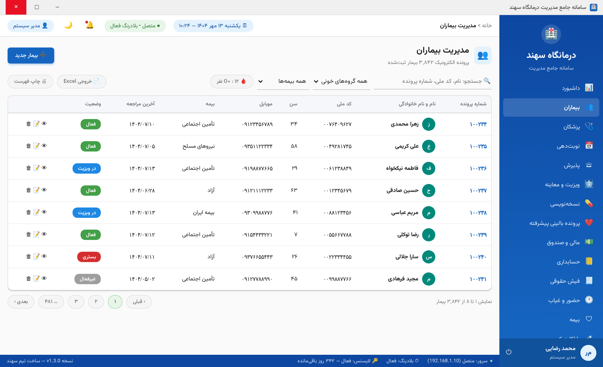
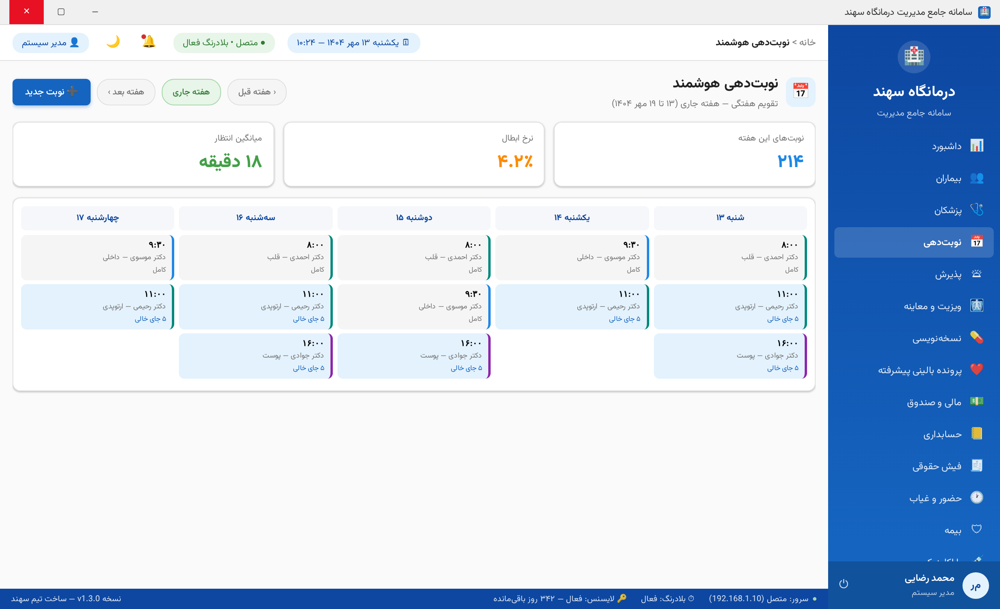
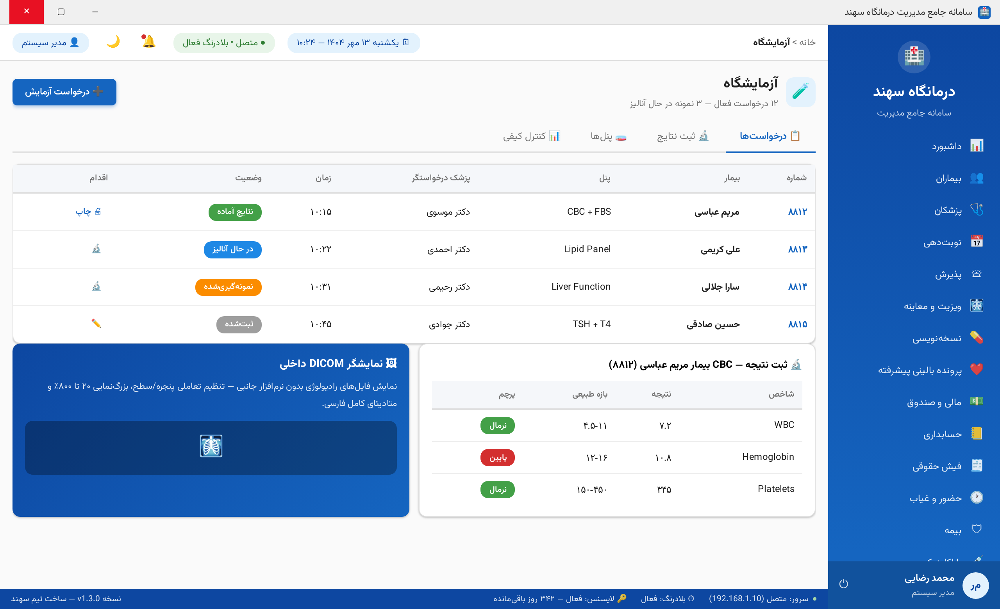
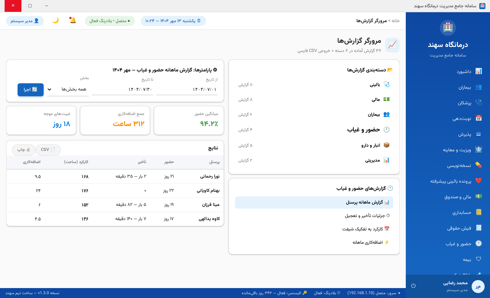

📘
راهنمای کامل کار با نرمافزار
سامانه جامع مدیریت درمانگاه سهند — Sahand ClinicPro
از ورود تا تسلط کامل — پذیرش • نوبتدهی • ویزیت • نسخه • مالی • حضور و غیاب • انبارگردانی • نظرسنجی
📖 فهرست مطالب
- شروع کار: ورود و آشنایی با محیط
- داشبورد مدیریتی
- مدیریت بیماران: ثبت، جستجو و پرونده
- نوبتدهی هوشمند
- پذیرش و مدیریت صف انتظار
- ویزیت و معاینه (SOAP)
- نسخهنویسی و تداخلسنجی
- پرونده بالینی پیشرفته
- آزمایشگاه و پاراکلینیک
- مالی: صندوق، فاکتور و پرداخت
- فیش حقوقی پرسنل
- حضور و غیاب برای کاربران
- داروخانه و انبارگردانی
- نظرسنجی بیماران ⭐ جدید
- گزارشساز و خروجیها
- پیامک و مرکز اعلانها
- تنظیمات شخصی، تم و چاپگر
- میانبرها، نکات طلایی و پرسشهای متداول
۱️⃣ شروع کار: ورود و آشنایی با محیط
🔓 ورود به سامانه
- روی میانبر «درمانگاه سهند» دسکتاپ دوبار کلیک کنید.
- نام کاربری و رمز عبور خود را وارد کنید.
- اگر اولین ورودتان است، سامانه تغییر اجباری رمز را نشان میدهد — رمز جدید باید حداقل ۸ نویسه با حروف بزرگ/کوچک و عدد باشد.
- گزینه «مرا به خاطر بسپار» تا ۱۴ روز ورود خودکار را فعال میکند (فقط روی رایانه شخصی).
💡 رمز را هرگز به کسی ندهید — همه عملیات شما در «لاگ عملیات» با نام کاربریتان ثبت میشود.
🖥 اجزای صفحه اصلی
| بخش | شرح |
|---|
| ستون کنار (راست) | منوی ۲۸ ماژول نرمافزار — با کلیک روی هر آیتم به آن صفحه میروید |
| نوار بالا | مسیر فعلی (خانه > صفحه جاری) + تاریخ و ساعت شمسی + زنگ اعلانها + تغییر تم + نام کاربر |
| ناحیه میانی | محتوای صفحه فعال (جداول، فرمها، کارتها) |
| نوار وضعیت (پایین) | وضعیت اتصال سرور + بلادرنگ + وضعیت لایسنس + نسخه نرمافزار |
📸 پنجره ورود نرمافزار

پنجره ورود — با فعالسازی لایسنس این هشدار برمیدارَد
🎨 تغییر تم روشن/تاریک و زبان اعداد
روی آیکون 🌙 در نوار بالا کلیک کنید تا تم تاریک فعال شود؛ از تنظیمات شخصی میتوانید اعداد را فارسی/انگلیسی انتخاب کنید.
۲️⃣ داشبورد مدیریتی
نخستین صفحه پس از ورود — نمای ۳۶۰ درجه امروز درمانگاه:
| کارت | معنا |
|---|
| 👥 بیماران امروز | تعداد مراجعان ثبتشده امروز — با مقایسه درصدی با دیروز |
| 📅 نوبتهای فعال | نوبتهای امروز که هنوز تکمیل نشدهاند |
| 🩺 پزشکان حاضر | پزشکان حاضر امروز (از حضور و غیاب واقعی دستگاه) |
| 💵 درآمد امروز | جمع فاکتورهای پرداختشده — ریال |
| ⏳ صف انتظار | بیماران در انتظار + میانگین زمان انتظار |
بخش نوبتهای پیشرو پنج نوبت بعدی را با شماره صف، پزشک و وضعیت رنگی نشان میدهد. داشبورد هر ۶۰ ثانیه خودکار بهروز میشود.
📸 داشبورد مدیریتی

۴ کارت اصلی + ۳ کارت فرعی + نمودار درآمد ۷ روز + نوبتهای پیشرو
۳️⃣ مدیریت بیماران
➕ ثبت بیمار جدید
۱
از منوی کناری بیماران را انتخاب کنید و روی دکمه «➕ بیمار جدید» کلیک کنید.
۲
فرم را پر کنید — فیلدهای ستارهدار الزامیاند: نام، نام خانوادگی، کد ملی (سامانه با الگوریتم رسمی رقم کنترلی صحت کد را بررسی میکند و کد جعلی یا تکراری رد میشود)، موبایل (قالب ۰۹xxxxxxxxx) و تاریخ تولد.
⚠️ ضد جعل (v1.6): کد ملی هنگام ثبت و ویرایش با الگوریتم رقم کنترلی اعتبارسنجی میشود؛ اگر کد ملی به بیمار دیگری تعلق داشته باشد پیام «بیمار دیگری با این کد ملی قبلاً ثبت شده است» میبینید — ولی ویرایش همان بیمار با کد ملی خودش همیشه مجاز است.
۳
گروه خونی، بیمه و حساسیت دارویی را وارد کنید — حساسیتها هنگام نسخهنویسی خودکار هشدار میدهند.
۴
ذخیره کنید — شماره پرونده (MRN) بهصورت خودکار صادر میشود (از ۱۰۰۰۰۱).
🔍 جستجو و پرونده
در کادر جستجو میتوانید نام، کد ملی یا شماره پرونده را وارد کنید — نتایج لحظهای فیلتر میشوند. با کلیک روی 👁 پرونده کامل بیمار باز میشود: سوابق ویزیت، نسخه، آزمایش، تصاویر و فاکتورها.
📸 فهرست بیماران

جستجوی لحظهای + فیلتر بیمه + وضعیت رنگی + صفحهبندی ۳٬۸۴۲ بیمار
۴️⃣ نوبتدهی هوشمند
- وارد ماژول نوبتدهی شوید — تقویم هفتگی نمایان میشود.
- روی «➕ نوبت جدید» کلیک کنید: بیمار را با کد ملی جستجو و انتخاب کنید.
- پزشک و بازه زمانی را انتخاب کنید — سامانه ظرفیت، تداخل زمانی و غیبت پزشک را همان لحظه بررسی میکند.
- نوبت ثبت شد و پیامک یادآوری برای بیمار صفبندی میشود (در صورت فعال بودن).
💡 رنگ خانههای تقویم: آبی = ظرفیت آزاد • خاکستری = کامل • بنفش = نوبت اضطراری. با کشیدنورها کردن (Drag) میتوانید نوبت را به بازه دیگر منتقل کنید.
📸 تقویم نوبتدهی

نمای هفتگی ۵ روز کاری با وضعیت ظرفیت هر بازه
۵️⃣ پذیرش و مدیریت صف انتظار
۱
پذیرش بیمار: در ماژول پذیرش روی «➕ پذیرش بیمار» کلیک کنید — بیمار روز را انتخاب، نوع خدمت (ویزیت/آزمایش/تصویربرداری) و پزشک را تعیین کنید. شماره صف بهصورت خودکار صادر میشود.
۲
فراخوان بیمار: با دکمه «🔔 فراخوان» کنار ردیف، نوبت به صفحه نمایش سالن و رایانه پزشک فرستاده میشود. تغییر وضعیتها (در صف → رسیده → در ویزیت → تکمیل) همان لحظه روی همه رایانهها بدون رفرش نمایان میشود — این کار «بلادرنگ» نام دارد.
۳
زمان انتظار: ستون «اقدام از پذیرش» زمان انتظار هر بیمار را میسنجد — اگر از حد مجاز بیشتر شد با نارنجی هشدار میدهد.
📸 صف انتظار زنده

صف زنده سالن — شماره دایرهای، وضعیت رنگی، دکمه فراخوان/اعلام
۶️⃣ ویزیت و معاینه (SOAP)
پرونده بالینی پزشکان با الگوی استاندارد SOAP ثبت میشود:
| بخش | محتوا | نمونه |
|---|
| S — Subjective | شرححال از زبان بیمار | «سردرد پیشانی از دو روز پیش، تب خفیف شبانه» |
| O — Objective | یافتههای معاینه و علائم حیاتی | تب ۳۷.۸، فشار ۱۱۰/۷۰، گلودرد قرمز |
| A — Assessment | تشخیص با کد ICD-10 الزامی | J06.9 — عفونت حاد تنفسی فوقانی |
| P — Plan | طرح درمان و آزمایشها | آزمایش CBC، نسخه دارویی، بازبینی ۵ روزه |
⚠️ تکمیل ویزیت بدون ثبت کد ICD-10 ممکن نیست — این الزام سامانههای دولتی است.
۷️⃣ نسخهنویسی و تداخلسنجی
۱
در ماژول نسخهنویسی بیمار فعلی از ویزیت قبلی بهصورت خودکار انتخاب است.
۲
دارو را از نوار جستجو از دیکشنری انتخاب کنید — دوز، بارداری و مدت را تعیین کنید.
۳
سامانه خودکار تداخل دارویی و حساسیت بیمار را بررسی میکند — هشدار نارنجی یعنی تداخل درجه ۲ (قابل صرفنظر با توضیح)، قرمز یعنی تداخل ممنوع (رد نسخه).
۴
با «ثبت و چاپ» نسخه چاپ و در صورت فعال بودن ماژول، نسخه الکترونیک به سامانه دولتی ارسال میشود.
📸 نسخهنویسی با پنل تداخلسنجی

اقلام نسخه + پنل تداخل/حساسیت/الگوی تشخیصی + قالبهای سریع
💡 قالبهای سریع (مثل «سرماخوردگی بزرگسال») نسخههای پرتکرار را با یک کلیک میسازند — قالب شخصی خودتان را با «➕ قالب جدید» بسازید.
۸️⃣ پرونده بالینی پیشرفته
برای بیماران اطفال و بیماران مزمن، سه ابزار تخصصی در اختیار است:
- 📊 نمودار رشد WHO: قد/وزن/محیط سر روی منحنی استاندارد جهانی با z-score رنگی — نرمال تا بحرانی
- 👥 سابقه خانوادگی: ۱۲ نسبت خویشاوندی با نشان ارثی برای پایش ریسک خانوادگی
- 🩺 طرح مراقبت مزمن: چرخه هدف/اقدام/بازبینی — موارد موعدرسیده با نارنجی هشدار میدهند
📸 نمودار رشد WHO

منحنی میانه و ±۳ انحراف معیار + مسیر واقعی بیمار + جدول z-score
۹️⃣ آزمایشگاه و پاراکلینیک
۱
ثبت نتیجه: در ماژول آزمایشگاه، درخواستها بر اساس وضعیت (ثبتشده → نمونهگیری → در حال آنالیز → آماده) گروهبندی میشوند. روی ردیف کلیک و «🔬 ثبت نتایج» را بزنید.
۲
پرچم مقادیر: هر شاخص با بازه طبیعی مقایسه و سبز/قرمز پرچم میخورد — مقادیر بحرانی هم برای پزشک اعلان میفرستد.
۳
چاپ و اطلاعرسانی: با «آماده» شدن، پیامک به بیمار و اعلان به پزشک ارسال میشود. نتیجه چاپی با سربرگ درمانگاه آماده است.
۴
DICOM: فایلهای رادیولوژی در تب تصویربرداری آپلود و با نمایشگر داخلی (تنظیم پنجره/سطح + بزرگنمایی) بررسی میشوند.
📸 آزمایشگاه

جریان درخواستها + ثبت نتیجه با پرچم + نمایشگر DICOM
🔟 مالی: صندوق، فاکتور و پرداخت
۱
صدور فاکتور: در ماژول «مالی و صندوق» روی «🧾 فاکتور جدید» — بیمار و خدمتها را انتخاب کنید. سهم بیمه و بیمار خودکار از جدول تعرفه محاسبه میشود.
۲
دریافت: روش پرداخت (نقدی/کارت/بیمه) را ثبت کنید — سند حسابداری دوبل خودکار صادر میشود؛ نیازی به ثبت دستی دفتروجوهها نیست.
۳
گزارش شیفت: پایان شیفت، «چاپ گزارش شیفت» گردش، فاکتورها و مانده را چاپ میکند — امضای صندوقدار و مدیر مالی.
📸 مالی و صندوق

کارتهای گردش + فاکتورها با پوشش بیمه و وضعیت تسویه
1️⃣1️⃣ فیش حقوقی پرسنل
- در ماژول فیش حقوقی دوره (سال/ماه شمسی) را انتخاب کنید.
- روی «⚙ محاسبه دوره» کلیک کنید — سامانه حقوق همه پرسنل را از قرارداد + اضافهکاری واقعی حضور و غیاب محاسبه میکند: اضافهکاری ۱.۴ برابر نرخ ساعت، بیمه ۷٪، مالیات پلکانی.
- با «✅ علامت پرداخت» ردیفها بسته میشوند و با «🧾 پیشنمایش فیش» فیش چاپی A4 با سه ناحیه امضا نمایش داده میشود.
📸 فیش حقوقی

کارتهای دوره + جدول مزایا/کسورات با Badge وضعیت
1️⃣2️⃣ حضور و غیاب برای کاربران
📋 تابلوی امروز
در ماژول حضور و غیاب، تابلوی امروز وضعیت لحظهای همه پرسنل را نشان میدهد: حاضر (سبز)، تأخیر (نارنجی)، غایب (قرمز)، مرخصی (آبی) و مأموریت (بنفش). ساعت ورود/خروج، دقایق تأخیر و شیفت مؤثر هر نفر در جدول پیداست. اگر ردیفی «دستی؟» تیک خورده باشد، یعنی اپراتور آن را دستی ثبت/اصلاح کرده و در ممیزی قابل ردیابی است.
📝 درخواست اصلاح کارت (فراموشی ضربه)
۱
به تب اصلاح کارت بروید و «ثبت درخواست» را بزنید: تاریخ، فیلد (ورود/خروج)، ساعت درخواستی و دلیل (اجباری) را وارد کنید.
۲
سرپرست از همان تب با دکمههای ✅/❌ تصمیم میگیرد — تأیید یعنی اعمال خودکار روی رکورد حضور + ثبت ممیزی.
📊 گزارش ماهانه
در تب گزارش ماهانه دوره را انتخاب و «بارگذاری» کنید — کارکرد، تعداد تأخیر و مجموع دقیقهها، اضافهکاری و غیبت هر پرسنل + جمع کل دوره در نوار بالا. خروجی این گزارش مبنای فیش حقوقی است.
📸 تابلوی حضور و غیاب

۶ کارت آماری + وضعیت لحظهای پرسنل + نوار همگامسازی خودکار دستگاه
1️⃣3️⃣ داروخانه و انبارگردانی ⭐ جدید v1.4.0
💊 ماژول داروخانه
در ماژول داروخانه موجودی قفسهها به تفکیک دارو و بچ (Batch) مدیریت میشود: ورود داروی جدید با «📥 ورود موجودی»، پیگیری تاریخ انقضا و موجودی بحرانی خودکار، و تراکنشهای مصرف/مرجوعی/تعدیل هر لحظه در پرونده مالی ثبت میشود. نوار بالا همیشه جمع ارزش ریالی موجودی را نشان میدهد.
📋 انبارگردانی (شمارش فیزیکی)
۱
شروع جلسه شمارش: در داروخانه → «📋 انبارگردانی» → «شروع شمارش جدید». سامانه یک عکس فوری (Snapshot) از کل موجودی فعلی میگیرد و جلسه را قفل میکند — تا وقتی این جلسه باز است، جلسه دیگری قابل شروع نیست.
۲
ورود شمارش واقعی: شمارش داروها را روی فرم وارد کنید؛ ستون مغایرت بهصورت زنده رنگی محاسبه میشود — سبز یعنی برابر، نارنجی کمبود، آبی افزایش. برای هر قلم میتوانید یادداشت دلیل مغایرت بنویسید (شکسته، نصفشده، انقضا و…).
۳
تکمیل و تأیید نهایی: پس از ثبت حداقل یک شمارش، «تکمیل» و سپس با تأیید مدیر «✔ تأیید نهایی» را بزنید — سامانه مغایرتها را بهعنوان تراکنش Adjustment با ارجاع به جلسه روی موجودی اعمال میکند و رد مالی آن بهطور خودکار صادر میشود.
۴
لغو و ممیزی: جلسه اشتباه با «✖ لغو» بسته میشود (حذف نرم و قابل ردیابی در ممیزی) و شمارنده قفل آزاد میشود.
💡 فاصله عکس فوری تا تأیید: معیار مقایسه همان عکس ابتدای جلسه است؛ حتی اگر در میانه شمارش دارویی ورود شود، مغایرتسنجی سالم میماند.
⚠️ تأیید نهایی نیازمند مجوز ویژه pharmacy.stocktake است — فقط سرپرست داروخانه یا مدیر مالی آن را دارد.
1️⃣4️⃣ نظرسنجی بیماران ⭐ جدید v1.5.0
📋 ایجاد نظرسنجی با سازنده پویا
۱
در ماژول نظرسنجی بیماران، تب لیست → «➕ نظرسنجی جدید»: عنوان، توضیح و نوع (رضایت/خدمات/پزشک) را وارد کنید.
۲
برای هر سوال، نوع را انتخاب کنید: امتیاز ۱ تا ۵ (ستارهای)، متن آزاد یا چندگزینهای — برای چندگزینهای، گزینهها را با «|» جدا کنید. با «➕ افزودن سوال» هر تعداد سوال بسازید.
۳
📤 ارسال لینک: با یک کلیک، برای همه بیماران ویزیتشده امروز پیامکی با لینک نظرسنجی در صف ارسال قرار میگیرد — پردازش پسزمینه آن را میفرستد.
📊 نتایج و آمار
در تب نتایج، نظرسنجی را انتخاب کنید: سه کارت (کل پاسخها، میانگین کل، پاسخ ۳۰ روز اخیر) + توزیع ستارههای ۵ تا ۱ با نوار مقایسهای + میانگین امتیاز هر پزشک + آخرین ۲۰ نظر آزاد بیماران با تاریخ شمسی. مدیر میتواند نظرسنجیهای قدیمی را غیرفعال کند.
💡 نظرسنجیهای غیرفعال پاسخ جدید نمیپذیرند ولی نتایج قبلیشان همیشه قابل مشاهده است.
1️⃣5️⃣ گزارشساز و خروجیها
- در ماژول گزارشها، ۳۱ گزارش کاملاً واقعی در ۶ دسته (بالینی، مالی، بیماران، حضور و غیاب، انبار، مدیریتی) آماده است — از سود و زیان و صورتحساب بیمار تا بیماریهای مزمن ICD-10 و الگوی مراجعات.
- گزارش را انتخاب، بازه و پارامترها را تعیین و «اجرا» کنید — کارتهای خلاصه و جدول نتایج نمایش داده میشود.
- با «📄 CSV» خروجی اکسل فارسی (با BOM درست) و با «🖨 چاپ» نسخه چاپی با سربرگ تهیه میشود.
📸 گزارشساز

دستهبندی ۳۱ گزارش + پارامترها + کارتهای خلاصه و جدول
1️⃣6️⃣ پیامک و مرکز اعلانها
- ارسال تکی/دستهای: در ماژول پیامک، مخاطبان هدفمند (بیماران امروز، نوبتهای فردا، بدهکاران...) را انتخاب کنید.
- تمپلیتها: متنهای آماده با متغیرهای خودکار مثل {نام} {تاریخ} {ساعت}.
- مرکز اعلان: زنگ بالای صفحه — نوبتهای در انتظار، نتایج آماده، موجودی بحرانی دارو، مطالبات معوق.
1️⃣7️⃣ تنظیمات شخصی، تم و چاپگر
🧑💻 کارت پشتیبانی زنده (جدید v1.6): از این نسخه، اطلاعات تماس پشتیبانی (نام پشتیبان، شرکت، تلفن، موبایل، ایمیل و وبسایت) هنگام فعالسازی لایسنس بهطور خودکار از سرور دریافت میشود و در صفحه «لایسنس» و «تنظیمات» نمایش داده میشود. این مقادیر از پنل مدیریت لایسنس توسط فروشنده قابل ویرایشاند و با هر تپقلب در نرمافزار شما بهروز میشوند — نیازی به تماس برای بهروزرسانی شمارهها نیست.
| تنظیم | مسیر | شرح |
|---|
| تغییر رمز | نام کاربر → تغییر رمز | رمز جدید نباید با ۵ رمز اخیر تکراری باشد |
| تم روشن/تاریک | آیکون 🌙 نوار بالا | برای همه صفحات ذخیره میشود |
| چاپگر فاکتور/نسخه | تنظیمات → چاپگر | چاپگر جداگانه برای هر نوع سند |
| سربرگ درمانگاه | تنظیمات → اطلاعات درمانگاه | نام، آدرس، لوگو و شمارهها روی همه چاپیها |
1️⃣8️⃣ میانبرها، نکات طلایی و پرسشهای متداول
⌨️ میانبرهای صفحهکلید
| میانبر | عمل |
|---|
| F1 | نمایش همین راهنما |
| F2 | جستجوی سریع بیمار (هر جای برنامه) |
| F5 | بارگذاری مجدد صفحه فعلی |
| Ctrl + P | چاپ سند فعلی |
| Ctrl + N | ثبت جدید در ماژول فعال (بیمار/نوبت/فاکتور) |
| Esc | بستن فرم/دیالوگ باز |
❓ پرسشهای متداول
| پرسش | پاسخ |
|---|
| صفحهها روی رایانه من دیر باز میشوند | اولین باز شدن پس از روشنشدن سرور طبیعی است؛ اگر تکرار شد وضعیت شبکه را به ادمین اطلاع دهید |
| ضربه حضورم ثبت نشد | از تب اصلاح کارت درخواست بدهید — سرپرست تأیید میکند |
| مغایرت انبارگردانی خیلی زیاد است | یادداشت هر قلم را کامل کنید و در جلسه بعدی پیش از شمارش، ورود/خروج همان روز را قطع کنید |
| پرینت فاکتور کج چاپ میشود | تنظیمات → چاپگر، اندازه کاغذ A5/A4 را مطابق فرم نسخه تنظیم کنید |
| نسخهام ارسال نشد به سامانه دولتی | اینترنت سرور یا توکن سپاس بررسی شود — نسخه در صف میماند و خودکار بازارسال میشود |
| دادهای که ثبت کردم نمیبینم | فیلترهای بالای جدول (بازه/وضعیت) را پاکسازی کنید |
📞 راه ارتباطی: برای آموزش حضوری، درخواست قابلیت و گزارش اشکال با تیم پشتیبانی در تماس باشید — dev@sahand-clinicpro.ir